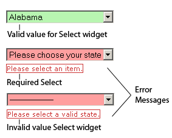

A Spry Validation Select widget is a drop-down menu that displays valid or invalid states when the user makes a selection. For example, you can insert a Validation Select widget that contains a list of states, grouped into different sections and divided by horizontal lines. If the user accidentally selects one of the divider lines as opposed to one of the states, the Validation Select widget returns a message to the user stating that their selection is invalid.
A version of this file is available on Adobe LiveDocs. Please check it for comments and updates.
The following example shows an expanded Validation Select widget, as well as the collapsed form of the widget in various states.

The Validation Select widget includes a number of states (for example, valid, invalid, required value, and so on). You can alter the properties of these states by using the Property inspector, depending on the desired validation results. A Validation Select widget can validate at various points (for example, when the user clicks outside the widget, as the user makes selections, or when the user tries to submit the form).
Whenever a Validation Select widget enters one of the preceding states through user interaction, the Spry framework logic applies a specific CSS class to the HTML container for the widget at run time. For example, if a user tries to submit a form, but did not select an item from the menu, Spry applies a class to the widget so that it displays the error message, “Please select an item.” The rules that control the style and display states of error messages reside in the SpryValidationSelect.css file that accompanies the widget.
The default HTML code for the Validation Select widget, usually inside of a form, is made up of a container span tag that surrounds the select tag of the text area. The HTML code for the Validation Select widget also includes script tags in the head of the document and after the widget’s HTML code.
The HTML code for the Validation Select widget also includes script tags in the head of the document and after the widget’s HTML code. The script tag in the head of the document defines all of the JavaScript functions related to the Select widget. The script tag after the widget code creates a JavaScript object that makes the widget interactive.
Following is the HTML code for a Validation Select widget:
<head>
...
<!-- Link the Spry Validation Select JavaScript library -->
<script src="SpryAssets/SpryValidationSelect.js" type="text/javascript"></script>
<!-- Link the CSS style sheet that styles the widget -->
<link href="SpryAssets/SpryValidationSelect.css" rel="stylesheet" type="text/css" />
</head>
<body>
<form id="form1" name="form1" method="post" action="">
<!-- Create the select widget and assign a unique id-->
<span id="spryselect1">
<select name="select1" id="select1">
<!-- Add items and values to the widget-->
<option>--Please select an item--</option>
<option value="item1">Item 1</option>
<option value="item2">Item 2</option>
<option value="-1">Invalid Item</option>
<option value="item3">Item 3</option>
<option>Empty Item</option>
</select>
<!--Add an error message-->
<span class="selectRequiredMsg">Please select an item.</span>
</span>
</form>
<!-- Initialize the Validation Select widget object-->
<script type="text/javascript">
var spryselect1 = new Spry.Widget.ValidationSelect("spryselect1");
</script>
</body>
In the code, the new JavaScript operator initializes the Select widget object, and transforms the span content with the ID of spryselect1 from static HTML code into an interactive page element.
The span tag for the error message in the widget has a CSS class applied to it. This class (which is set to display:none; by default), controls the style and visibility of the error message, and exists in the accompanying SpryValidationSelect.css file. When the widget enters different states as a result of user interaction, Spry places different classes on the container for the widget, which in turn affects the error-message class.
You can add other error messages to a Validation Select widget by creating a span tag (or any other type of tag) to hold the text of the error message. Then, by applying a CSS class to it, you can hide or show the message, depending on the widget state.
You can change the default appearance of the Validation Select widget's state by editing the corresponding CSS rule in the SpryValidationSelect.css file. For example, to change the background color for a state, edit the corresponding rule or add a new rule (if it’s not already present) in the style sheet.
In the preceding example, span tags create the structure for the widget:
Container SPAN SELECT tag Error message SPAN
You can, however, use almost any container tag to create the widget.
Container DIV SELECT tag Error Message P
Spry uses the tag ID (not the tag itself) to create the widget. Spry also displays error messages using CSS code that is indifferent to the actual tag used to contain the error message.
The ID passed into the widget constructor identifies a specific HTML element. The constructor finds this element and looks inside the identified container for a corresponding select tag. If the ID passed to the constructor is the ID of the select tag (rather than a container tag), the constructor attaches validation triggers directly to the select tag. If no container tag is present, however, the widget cannot display error messages, and different validation states will only alter the appearance of the select tag element (for example, its background color).
Note: Multiple select tags do not work inside the same HTML widget container. Each select list should be its own widget.
The SpryValidationSelect.css file contains the rules that style the Validation Select widget and its error messages. You can edit these rules to style the look and feel of the widget and error messages. The names of the rules in the CSS file correspond to the names of the classes specified in the widget’s HTML code.
The following is the CSS code for the SpryValidationSelect.css file:
/*Validation Select styling classes*/
.selectRequiredMsg, .selectInvalidMsg {
display: none;
}
.selectRequiredState .selectRequiredMsg,
.selectInvalidState .selectInvalidMsg {
display: inline;
color: #CC3333;
border: 1px solid #CC3333;
}
.selectValidState select, select.selectValidState {
background-color: #B8F5B1;
}
select.selectRequiredState, .selectRequiredState select,
select.selectInvalidState, .selectInvalidState select {
background-color: #FF9F9F;
}
.selectFocusState select, select.selectFocusState {
background-color: #FFFFCC;
}
The SpryValidationSelect.css file also contains extensive comments, explaining the code and the purpose for certain rules. For further information, see the comments in the file.
For example, create a folder called SpryAssets in the root folder of your web site, and upload the SpryValidationSelect.js file to it. The SpryValidationSelect.js file contains all of the information necessary for making the Select widget interactive.
<script src="SpryAssets/SpryValidationSelect.js" type="text/javascript"></script>
Make sure that the file path to the SpryValidationSelect.js file is correct. This path varies depending on where you’ve placed the file in your web site.
<link href="SpryAssets/SpryValidationSelect.css" rel="stylesheet" type="text/css" />
Make sure that the file path to the SpryValidationSelect.css file is correct. This path varies depending on where you’ve placed the file in your web site.
<select name="myselect" id="myselect"></select>
<select name="myselect" id="myselect"> <option>--Please select an item--</option> <option value="item1">Item 1</option> <option value="item2">Item 2</option> <option value="-1">Invalid Item</option> <option value="item3">Item 3</option> <option>Empty Item</option> </select>
<span id="spryselect1"> <select name="myselect" id="myselect"> <option>--Please select an item--</option> <option value="item1">Item 1</option> <option value="item2">Item 2</option> <option value="-1">Invalid Item</option> <option value="item3">Item 3</option> <option>Empty Item</option> </select> </span>
<script type="text/javascript">
var spryselect1 = new Spry.Widget.ValidationSelect("spryselect1");
</script>
The new JavaScript operator initializes the Select widget object, and transforms the span tag content with the ID of spryselect1 from static HTML code into an interactive select object. The Spry.Widget.ValidationSelect method is a constructor in the Spry framework that creates select objects. The information necessary to initialize the object is contained in the SpryValidationSelect.js JavaScript library that you linked to at the beginning of this procedure.
Make sure that the ID of the select list’s container span tag matches the ID parameter you specified in the Spry.Widgets.ValidationSelect method. Make sure that the JavaScript call comes after the HTML code for the widget.
The complete code looks as follows:
<head>
...
<script src="SpryAssets/SpryValidationSelect.js" type="text/javascript"></script>
<link href="SpryAssets/SpryValidationSelect.css" rel="stylesheet" type="text/css" />
</head>
<body>
<span id="spryselect1">
<select name="myselect" id="myselect">
<option>--Please select an item--</option>
<option value="item1">Item 1</option>
<option value="item2">Item 2</option>
<option value="-1">Invalid Item</option>
<option value="item3">Item 3</option>
<option>Empty Item</option>
</select>
</span>
<script type="text/javascript">
var spryselect1 = new Spry.Widget.ValidationSelect("spryselect1");
</script>
</body>
Create a span tag (or any other type of tag) to display the error message, and assign the appropriate class to it, as follows:
<span id="spryselect1"> <select name="select1" id="select1"> <option>--Please select an item--</option> <option value="item1">Item 1</option> . . . </select> <span class="selectRequiredMsg">Please select an item.</span> </span>
The selectRequiredMsg rule is located in the SpryValidationSelect.css file, and is set to display:none by default. When the widget enters a different state through user interaction, Spry applies the appropriate class—the state class—to the container of the widget. This action affects the error-message class, and by extension, the appearance of the error message.
For example, the following shows a portion of the CSS rule from the SpryValidationSelect.css file:
.selectRequiredMsg, .selectInvalidMsg {
display: none;
}
.selectRequiredState .selectRequiredMsg,
.selectInvalidState .selectInvalidMsg {
display: inline;
color: #CC3333;
border: 1px solid #CC3333;
}
By default, no state class is applied to the widget container, so that when the page loads in a browser, the error message text in the preceding HTML code example only has the .selectRequiredMsg class applied to it. (The property and value pair for this rule is display:none, so the message remains hidden.) If the user fails to make a selection, however, Spry applies the appropriate class to the widget container, as follows:
<span id="spryselect1" class="selectRequiredState"> <select name="select1" id="select1"> <option>--Please select an item--</option> <option value="item1">Item 1</option> . . . </select> <span class="selectRequiredMsg">Please select an item.</span> </span>
In the preceding CSS code, the state rule with the contextual selector .selectRequiredState . selectRequiredMsg overrides the default error-message rule responsible for hiding the error-message text. Thus, when Spry applies the state class to the widget container, the state rule determines the appearance of the widget, and displays the error message inline in red with a 1-pixel solid border.
Following is a list of default error-message classes and their descriptions. You can change these classes and rename them. If you do so, don’t forget to change them in the contextual selector also.
| Error message class |
Description |
|---|---|
.selectRequiredMsg |
Causes error message to display when the widget enters the required state |
.selectInvalidMsg |
Causes error message to display when the widget enters the invalid state |
Note: You cannot rename state-related class names because they are hard-coded as part of the Spry framework.
By default, the Validation Select widget validates when the user clicks the submit button. You can, however, set two other options: blur or change. The validateOn:["blur"] parameter causes the widget to validate whenever the user clicks outside the select list. The validateOn:["change"] parameter causes the widget to validate as the user makes selections.
To specify when validation occurs, add a validateOn parameter to the constructor as follows:
<script type="text/javascript">
var spryselect1 = new Spry.Widget.ValidationSelect("spryselect1", {validateOn:["blur"]});
</script>
As a convenience, you can discard the brackets if your validateOn parameter contains a single value (for example, validateOn: "blur"). If the parameter contains both values, however (validateOn:["blur", "change"]), include brackets in the syntax.
By default, Validation Select widgets require the user to make a selection before submitting the form. You can, however, make selections optional for the user.
To change the required status of a select list, add the isRequired property to the constructor and set its value to false, as follows:
<script type="text/javascript">
var selectwidget1 = new Spry.Widget.ValidationSelect("selectwidget1", {isRequired:false});
</script>
You can specify a value that registers as invalid if the user selects a menu item that is associated with that value. For example, if you specify -1 as an invalid value, and you assign the value to an option tag, the widget returns an error message if the user selects that menu item.
<option value="-1"> ------------------- </option>
<script type="text/javascript">
var selectwidget1 = new Spry.Widget.ValidationSelect("selectwidget1", {invalidValue:"-1"});
</script>
The SpryValidationSelect.css file provides the default styling for the Validation Select widget. You can, however, customize the widget by changing the appropriate CSS rule. The CSS rules in the SpryValidationSelect.css file use the same class names as the related elements in the widget’s HTML code, so it’s easy for you to know which CSS rules correspond to the widget and its error states.
The SpryValidationSelect.css file should already be included in your website before you start customizing.
The SpryValidationSelect.css file contains extensive comments, explaining the code and the purpose for certain rules. For further information, see the comments in the file.
By default, error messages for the Validation Select widget appear in red with a 1-pixel solid border surrounding the text.
To change the text styling of Validation Select widget error messages, use the following table to locate the appropriate CSS rule, and then change the default properties, or add your own text styling properties and values.
| Text to style |
Relevant CSS rule |
Relevant properties to change |
|---|---|---|
Error message text |
.selectRequiredState .selectRequiredMsg, .selectInvalidState .selectInvalidMsg |
color: #CC3333; border: 1px solid #CC3333; |
To change the background colors of the Validation Select widget in various states, use the following table to locate the appropriate CSS rule, and then change the default background color values.
| Background color to change |
Relevant CSS rule |
Relevant property to change |
|---|---|---|
Background color of widget in valid state |
.selectValidState select, select.selectValidState |
background-color: #B8F5B1; |
Background color of widget in invalid state |
select.selectRequiredState, .selectRequiredState select, select.selectInvalidState, .selectInvalidState select |
background-color: #FF9F9F; |
Background color of widget in focus |
.selectFocusState select, select.selectFocusState |
background-color: #FFFFCC; |
While you can replace error message-related class names with class names of your own by changing the rules in the CSS and the class names in the HTML code, you cannot change or replace state-related class names, because the behaviors are hard-coded as part of the Spry framework. You can, however, override the default state-related class name with your own class name by specifying a new value in the third parameter of the widget constructor.
To change widget state-related class names, add one of the overriding options to the third parameter of the widget constructor, and specify your custom class name, as follows:
<script type="text/javascript">
var spryselect1 = new Spry.Widget.ValidationSelect("spryselect1", {requiredClass:"required"});
</script>
The following table provides a list of options you can use to override built-in state-related class names.
| Option |
Description |
|---|---|
requiredClass |
Overrides the "selectRequiredState" built-in value |
validClass |
Overrides the "selectValidState" built-in value |
focusClass |
Overrides the "selectFocusState" built-in value |
invalidClass |
Overrides the "selectInvalidState" built-in value |
Copyright © 2006. Adobe Systems Incorporated. All rights reserved.